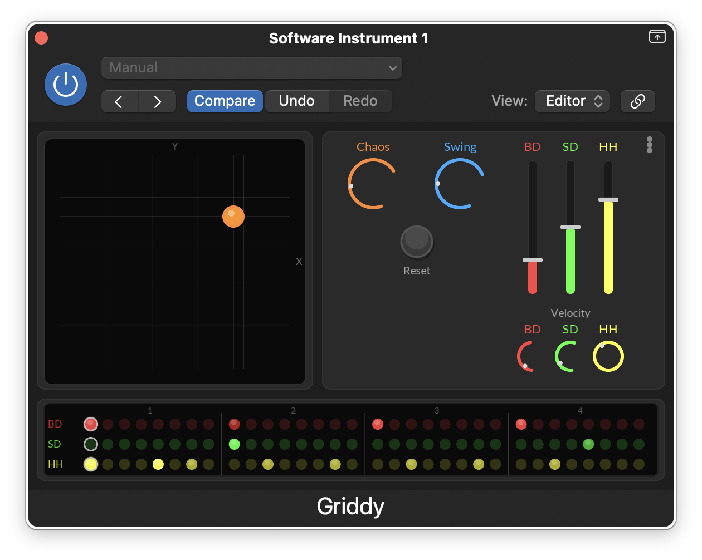
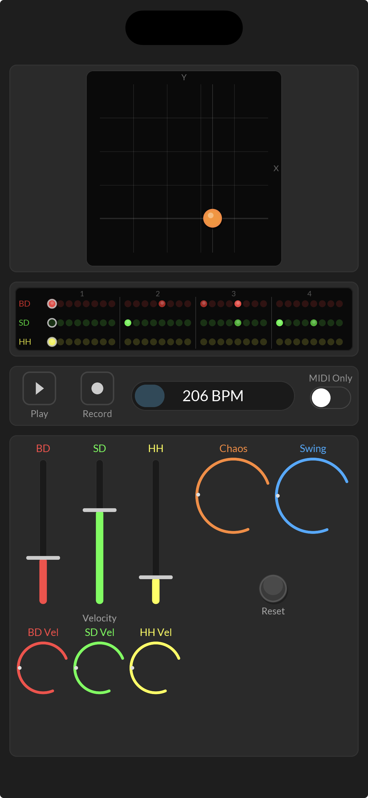

Evolving Rhythms
Griddy generates evolving drum patterns by interpolating across a 5x5 map of rhythm nodes. Instead of programming individual beats, you drag an XY pad to smoothly morph through different rhythmic terrains.
The sequencer controls three distinct drum voices: Bass Drum, Snare Drum, and Hi-Hat. By shaping the density and velocity of each voice, you can go from sparse, minimal patterns to dense, chaotic grooves instantly.
Deep Modulation
Route two built-in LFOs to animate the XY pad, density controls, swing, chaos, or velocities. Modulate your patterns for rhythms that never repeat.
Quantize & Reset
Keep things musical. You can quantize your modulations and reset the sequencer at specific bar intervals to ensure your chaotic beats always resolve on the one.
Full Automation
Every parameter is exposed to your DAW. Automate the XY pad as you record to capture unique organic performances, sweeps, and fills.
Custom MIDI
Don't like the default outputs? Griddy lets you fully customize the MIDI note mappings in the settings so it works perfectly with your favorite drum rack or hardware synth.
Chaos, Swing & Velocity
Shape the feel of every loop with controlled randomness, pocket, and accent. Dial in chaos for variation, swing for groove, and per-voice velocity for more expressive drum motion.
Euclidean Mode
Enable Euclidean mode for evenly distributed rhythmic pulses, then set independent BD, SD, and HH pattern lengths so each lane can cycle against the others in polyrhythmic ways.
Screenshots

The main Griddy plugin view with the XY rhythm map, per-voice controls, and evolving pattern lanes.

Choose reset behavior, toggle MIDI thru and live mode, and access acknowledgements from the general tab.

Set reset quantization and enable Euclidean mode with separate BD, SD, and HH pattern lengths.

Configure the output channel, remap drum note assignments, and use MIDI learn for reset control.

Route Griddy's LFOs to XY, density, swing, chaos, notes, reset, and velocity destinations.

The iPhone version brings the core sequencing controls to a touch-first layout for mobile sketching and performance.
Setup & FAQ
How do I set up Griddy in Ableton Live?
Because Griddy is a MIDI generator (VST3/AU), you load it on one track and route its MIDI output to a drum instrument on a second track.
- Load Griddy on MIDI Track 1 from the Ableton browser under The Generous Corp > Griddy, and set its Monitor to "In".
- Load a Drum Rack (or any drum synth) on MIDI Track 2.
- On Track 2's routing section, set Input Type to "1-Griddy".
- Set the Input Channel directly below it to "Griddy".
- Set Track 2 Monitor to "In".
- Press play in Ableton to start the transport and hear your beats!
How do I set up Griddy in Logic Pro?
Logic Pro natively supports Audio Unit (AU) MIDI FX plugins, which makes routing very easy and keeps everything on a single track.
- Create a new Software Instrument track.
- In the Inspector panel, click the Instrument slot and load your preferred drum synth (like Drum Machine Designer or Drum Kit Designer).
- Above the Instrument slot, click the MIDI FX slot.
- Navigate to Audio Units > The Generous Corp > Griddy.
- Press Play in Logic. Griddy syncs to your DAW's transport clock and will automatically begin triggering the drum instrument!
What are the default MIDI notes?
By default, Griddy outputs the standard General MIDI drum map:
- Bass Drum: C1 (MIDI Note 36)
- Snare Drum: D1 (MIDI Note 38)
- Hi-Hat: F#1 (MIDI Note 42)
Note: You can easily change these assignments at any time by clicking the Settings icon inside the plugin.
What was Griddy built with?
Griddy was built with the JUCE Plugin Starter, the juce-dev plugin for Claude Code, and a fork of Visage with iOS touch event support.
The source code for Griddy itself is available on GitHub.